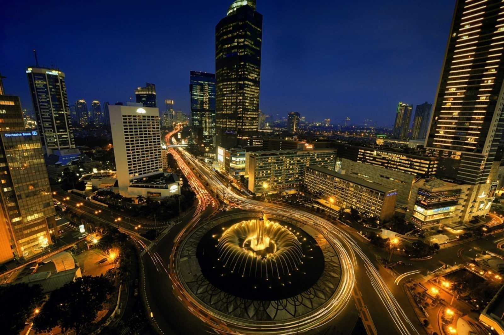
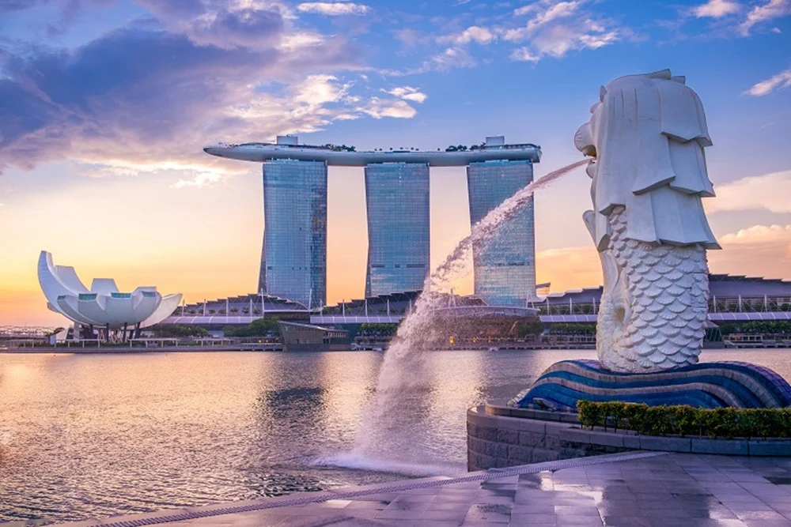

Destinasi Liburan Terbaik

Kota Jakarta
Jakarta (DKI Jakarta) adalah ibu kota negara dan kota terbesar di Indonesia. Jakarta merupakan satu-satunya kota di Indonesia yang memiliki status setingkat provinsi. Jakarta terletak di pesisir bagian barat laut Pulau Jawa. Dahulu pernah dikenal dengan beberapa nama di antaranya Sunda Kelapa, Jayakarta, dan Batavia. Di dunia internasional Jakarta juga mempunyai julukan J-Town, atau lebih populer lagi The Big Durian karena dianggap kota yang sebanding New York City (Big Apple) di Indonesia.
Jakarta memiliki luas sekitar 661,52 km² (lautan: 6.977,5 km²), dengan penduduk berjumlah 10.187.595 jiwa (2011). Wilayah metropolitan Jakarta (Jabodetabek) yang berpenduduk sekitar 28 juta jiwa, merupakan metropolitan terbesar di Asia Tenggara atau urutan kedua di dunia..
Read More

Kota Malaysia
Ibukota negara Malaysia adalah Kuala Lumpur, yang merupakan salah satu kota metropolitan paling menarik di kawasan Asia Tenggara. Dengan pesona budaya multikultural dan modernitas yang memikat, kota ini telah menjadi salah satu tujuan utama bagi para wisatawan dari seluruh dunia.
Ibukota negara Malaysia adalah Kuala Lumpur juga dianggap sebagai simbol persatuan dan kemajuan Malaysia. Kuala Lumpur merupakan pusat dari seluruh aktivitas pemerintahan, dan berbagai aspek kehidupan nasional di Malaysia..
Read More

Kota Singapura
Singapura atau Republik Singapura adalah negara kepulauan yang terletak di ujung selatan Semenanjung Malaya, berjarak 137 kilometer di utara khatulistiwa. Negara ini dipisahkan oleh Malaysia melalui Selat Johor di utara, dan Kepulauan Riau Indonesia melalui Selat Singapura di sebelah selatan. Singapura merupakan pusat perekonomian terbesar ketiga di dunia dan menjadi kota metropolitan internasional yang berperan penting dalam perdagangan juga perekonomian internasional. Pelabuhan Singapura menjadi salah satu pelabuhan tersibuk di dunia. Singapura juga menjadi destinasi wisata favorit masyarakat Indonesia.
Read More